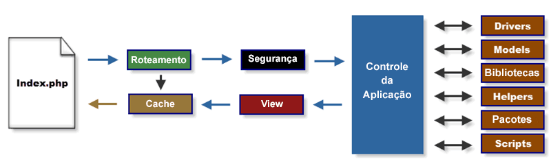

Fluxograma da Aplicação
A imagem abaixo ilustra como é o fluxo de dados através do sistema:

- O index.php serve como um controlador primário, iniciando os recursos básicos necessários para rodar o CodeIgniter.
- O roteador examina a requisição HTTP para determinar o que deve ser feito com ela.
- Se já existem o arquivo "cacheado", ele é enviado diretamente ao browser, pulando as outras etapas de execução.
- Segurança. Antes do controller de aplicação ser carregado, a requisição HTTP e qualquer dado submetido pelo usuário é filtrado por segurança.
- O Controller carrega o model as bibliotecas principais, plugins, helpers e qualquer outro recurso necessário para processar a requisição específica.
- A View finalizada é renderizada e então enviada ao browser para ser vista. Se o cache está habilitado, a view é "cacheada" primeiro para que seja servida em requisições subsequentes.